Effective Visualizations & Choosing a Chart Type
Different kinds of charts are good at telling different kinds of stories
Figure out the editorial point you want to make.
Comparison: Clinton got more campaign contributions than Trump
Change: The number of jobs in the manufacturing sector has grown over the last decade.
Composition: Half of the country thinks we should have free healthcare.
Relationship: There is a connection between education and poverty.
There are other types, too.
Change over time
Line
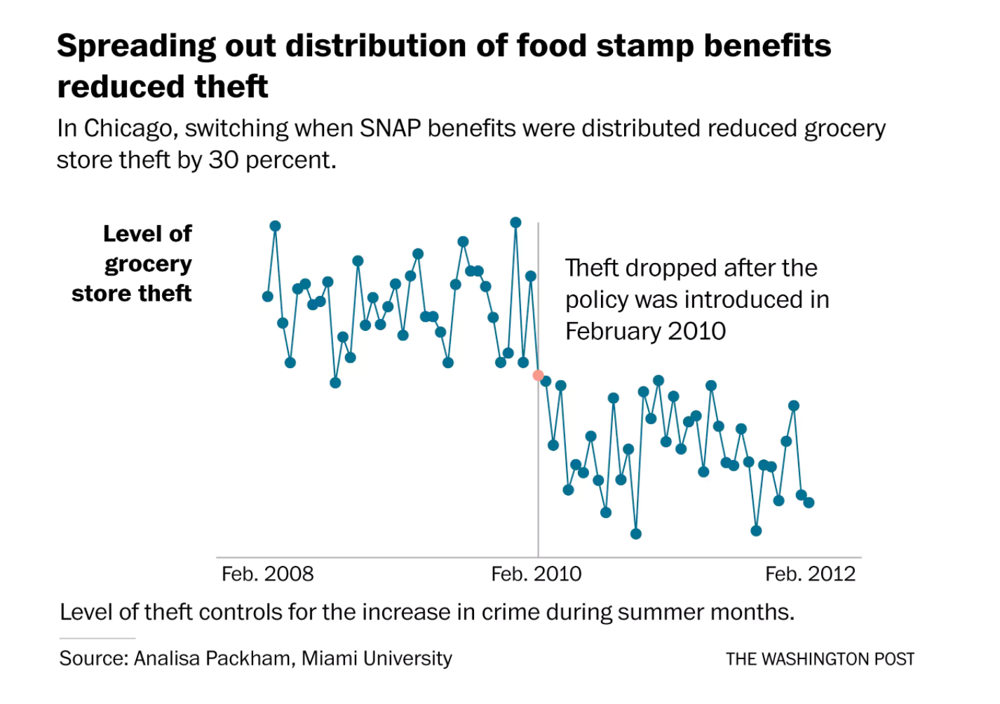Source: Washington Post
Change over time
Column
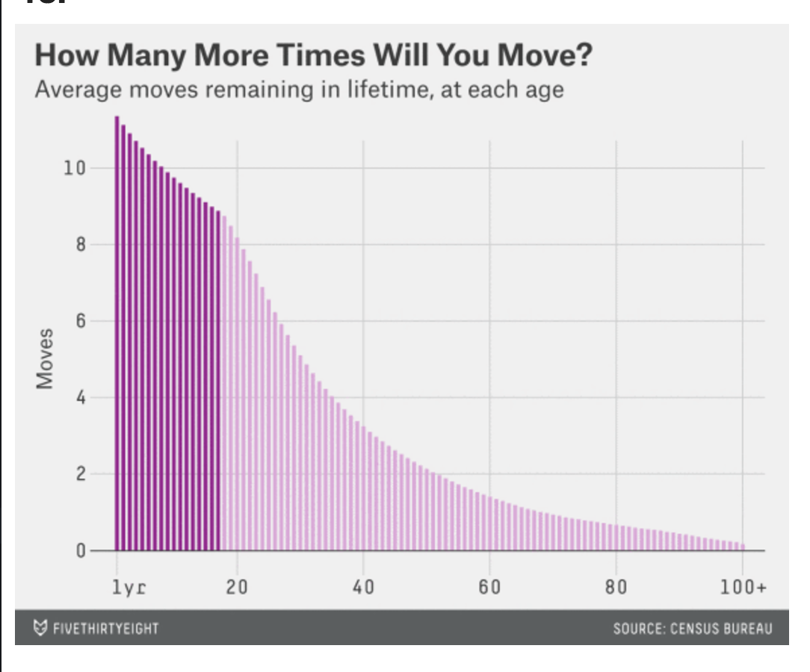Source: 538
Comparing categories
Bar
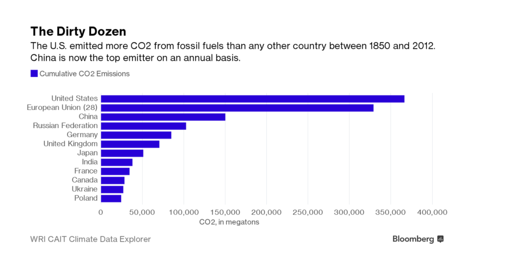Source: Bloomberg
Comparing categories
Bar (Negative/Positive)

Source: New York Times
Composition
Stacked bar
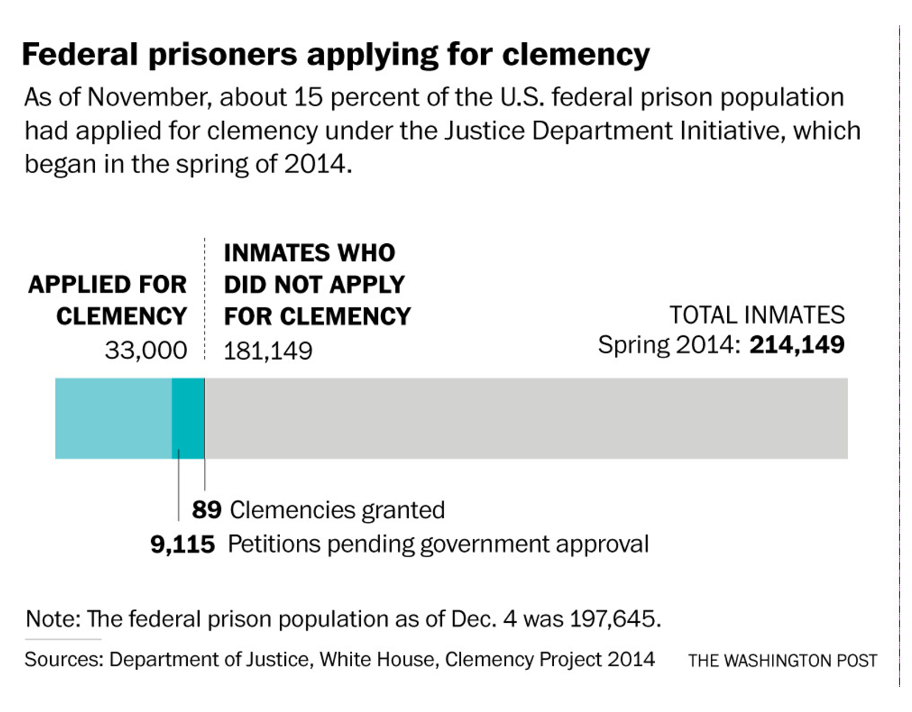Source: 538
Composition
Pie chart
Actually, don't make pie charts.
Relationship
Scatterplot
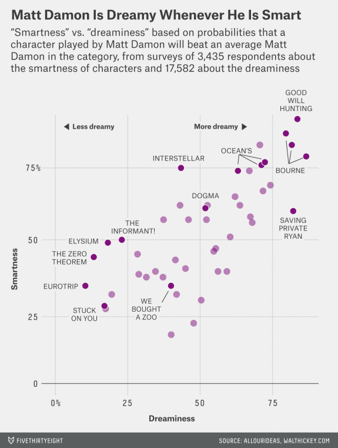Source: 538
Relationship
Scatterplot with line of best fit
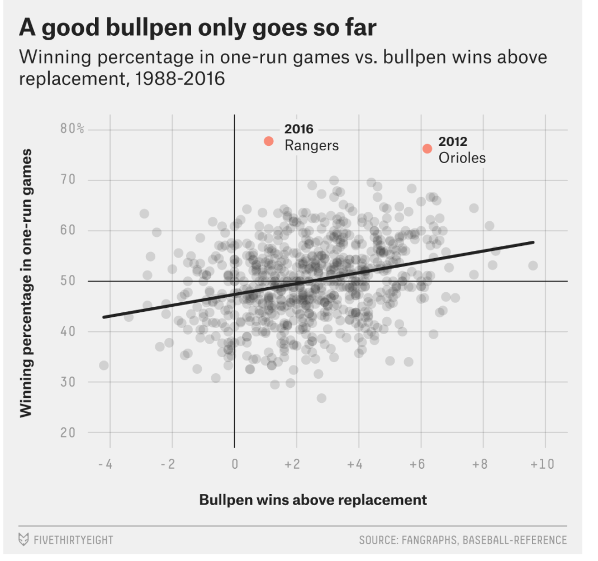Source: 538
Relationship
Network diagram
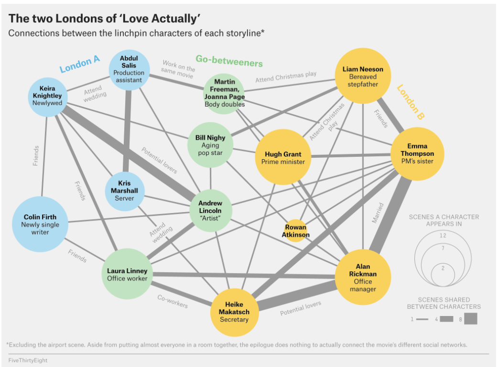Source: 538
Relationship
Network diagram
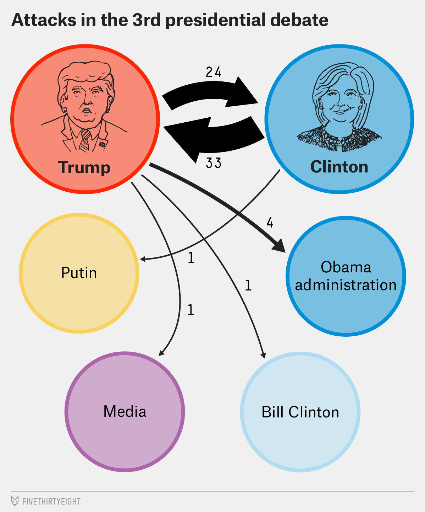Source: 538
Distribution
Histogram (one variable)
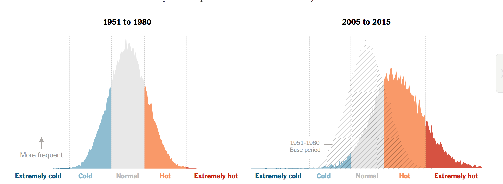Source: New York Times
Distribution
Scatterplot (two variables)
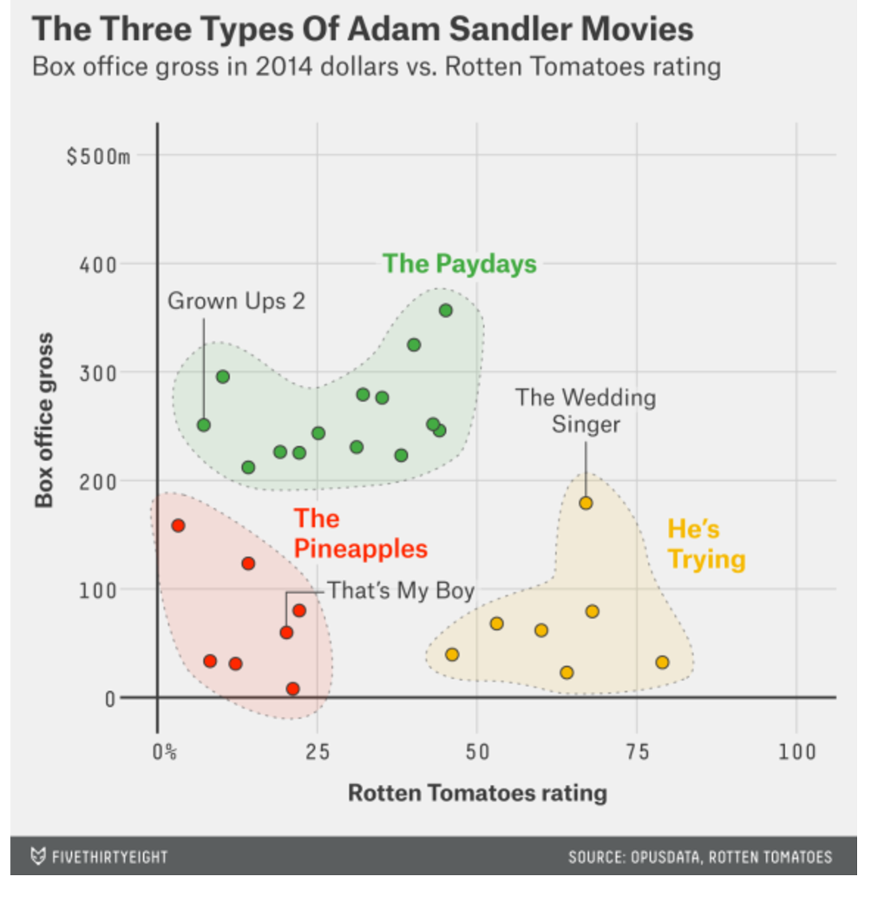Source: 538
Distribution
Heatmap
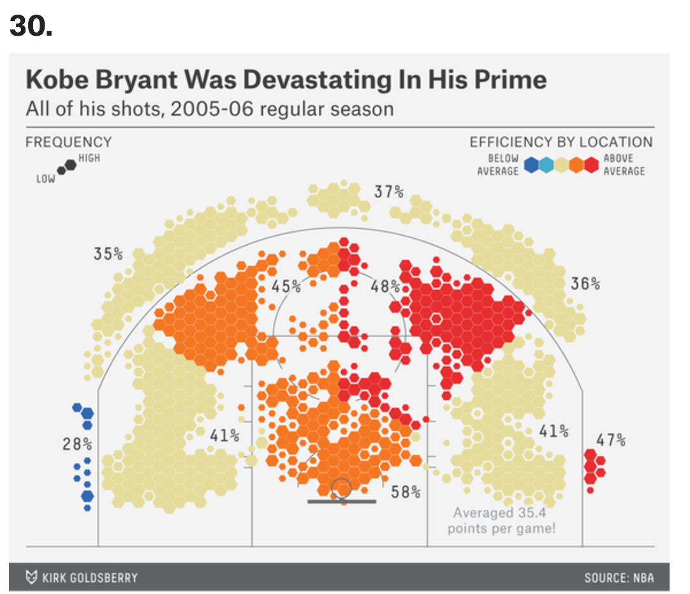Source: 538
Multi-purpose chart types
Composition+Change
Treemap
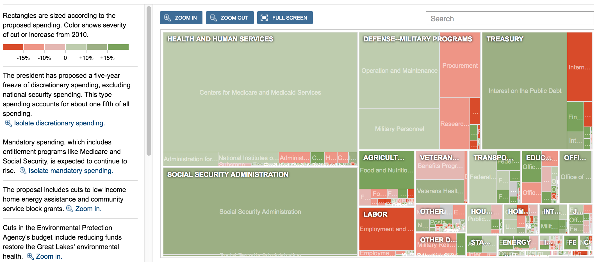Source: 538
Composition+Change
Stacked bar
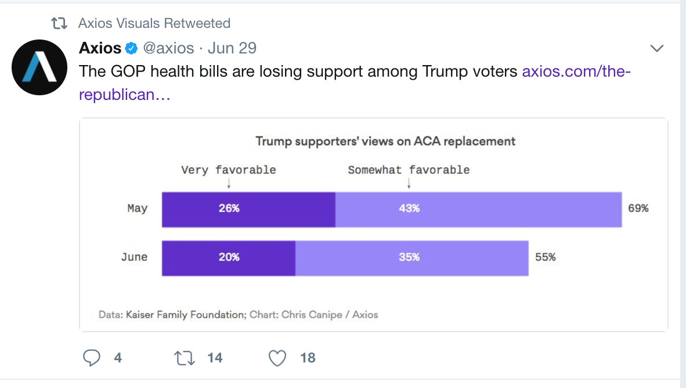Source: 538
Change+Comparison
Line
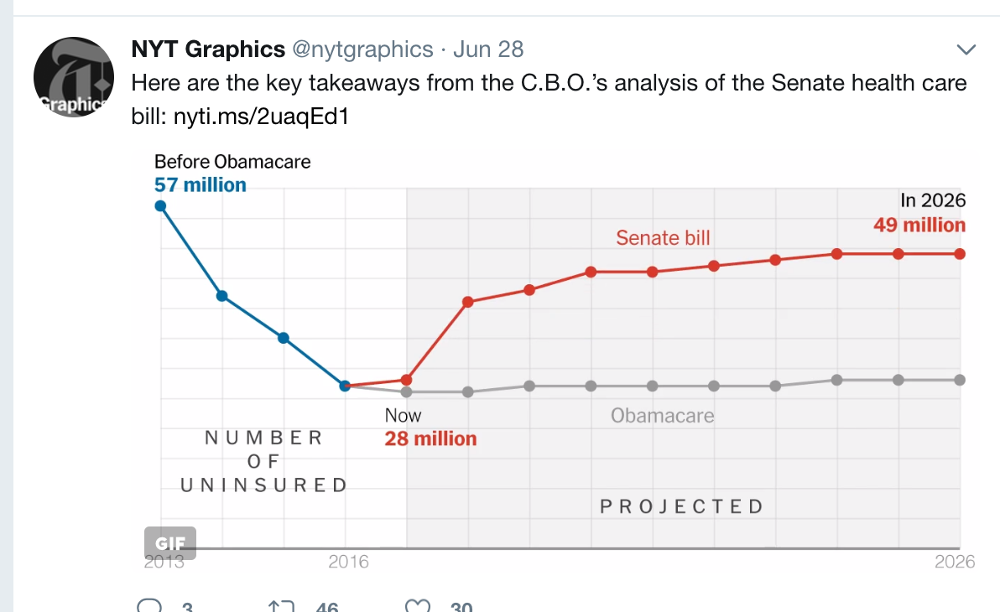Source: New York Times
Change+Comparison
Small multiple, slope
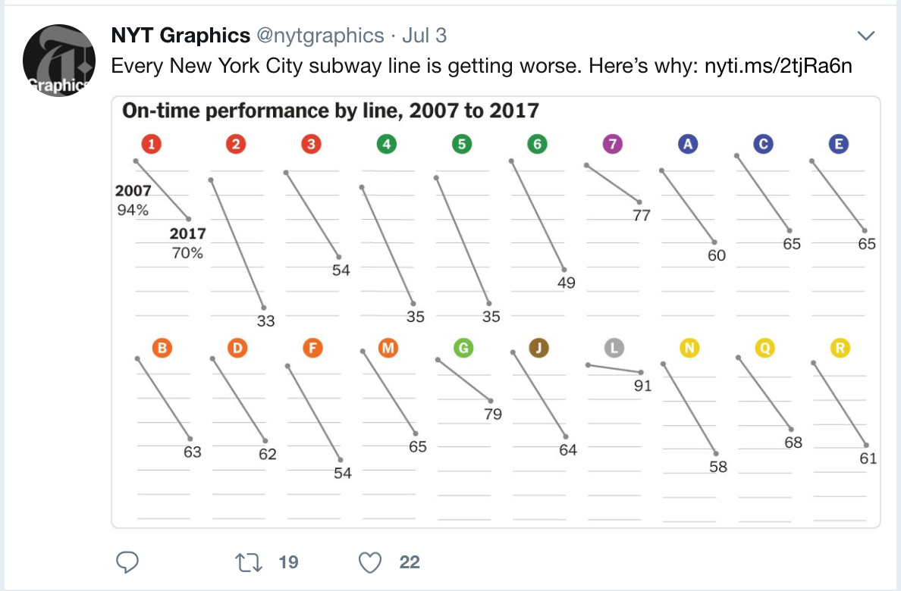Source: New York Times